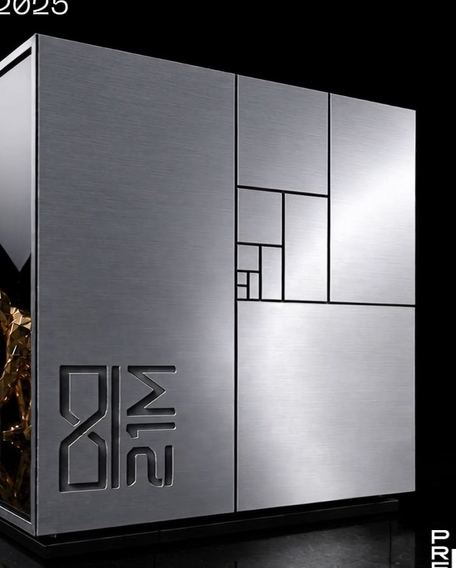
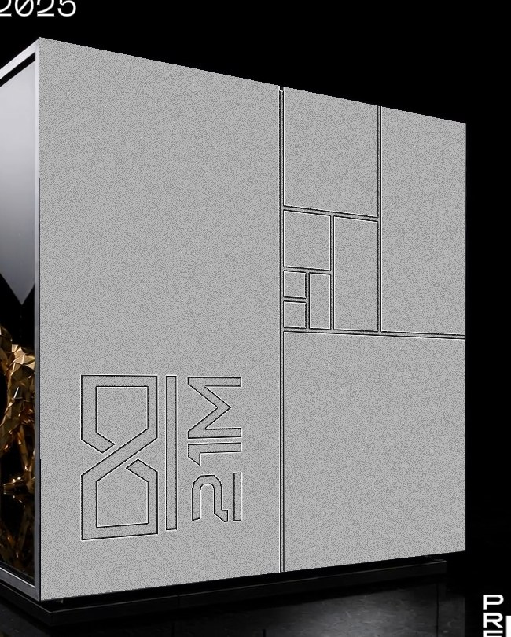
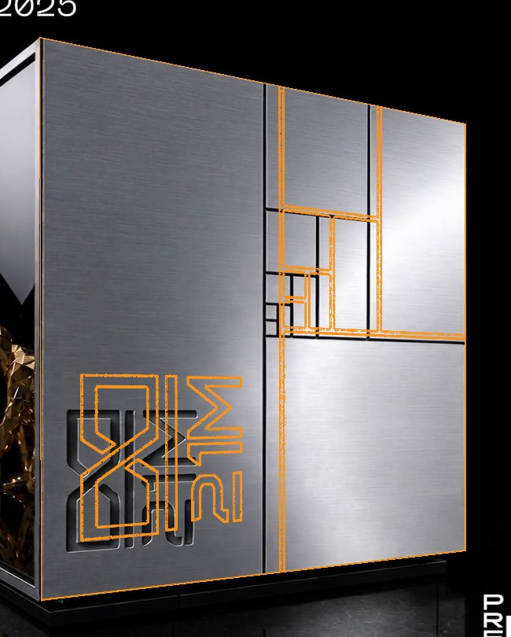
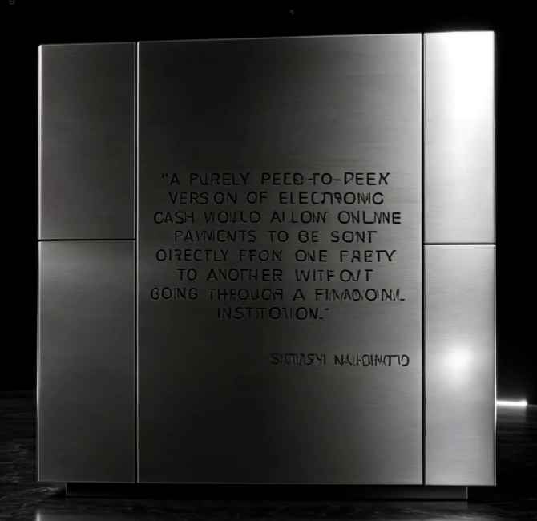
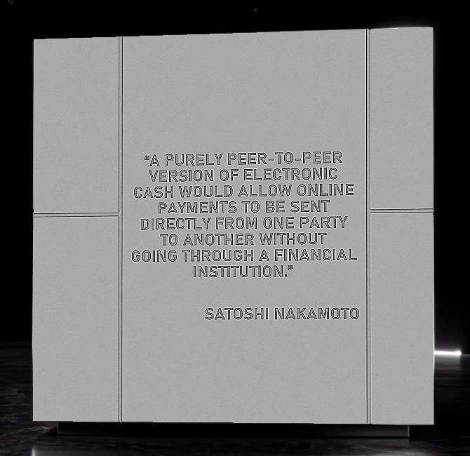
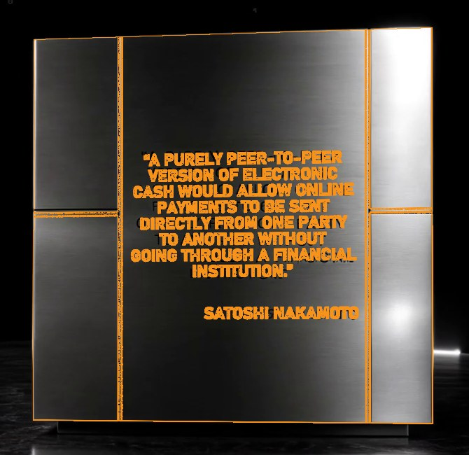

La réplica del cubo de acero del monumento, a 15 cm y en cuatro piezas que se imprimen sin soportes. Girá el modelo, desarmalo y mirá cómo va cada pieza en la impresora.
Cada zip trae las cuatro piezas ya orientadas para la cama, el cubo armado de referencia y una nota de armado. Ninguna pieza lleva soporte: el cuerpo se imprime parado sobre el piso, la cara de la frase y el techo van en plano con las letras hacia arriba, y la base es una placa plana.
Todas tomadas de los STL. El modelo se diseñó a 8 cm y se escaló parejo ×1.875, así que también crecen las profundidades.
Mínimos tomados de la guía de tamaño de texto por boquilla y la guía de diseño de Formlabs.
La cara del modelo está deformada en perspectiva para que sus cuatro esquinas caigan justo sobre las del monumento en un frame del video. Deslizá para pasar de uno al otro, o mirá el contorno: las líneas naranjas son los calados del modelo dibujados sobre el video.



ModeloMonumento


ModeloMonumentoLa primera versión, a 8 cm y en una pieza. A ese tamaño la frase del whitepaper queda con trazo de 0.45 mm, por debajo del mínimo para pico de 0.4, así que solo sirve para resina o boquilla 0.2.